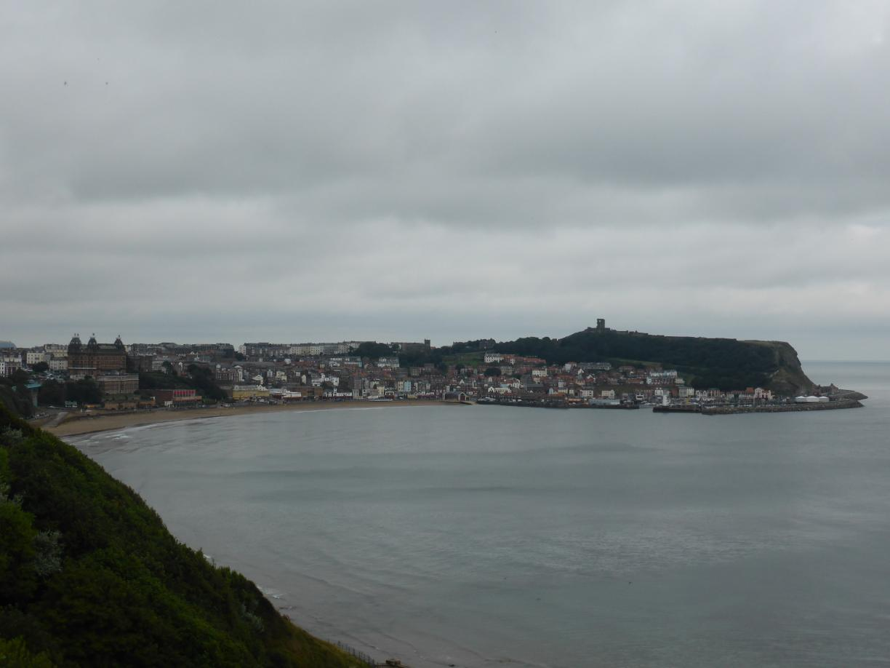
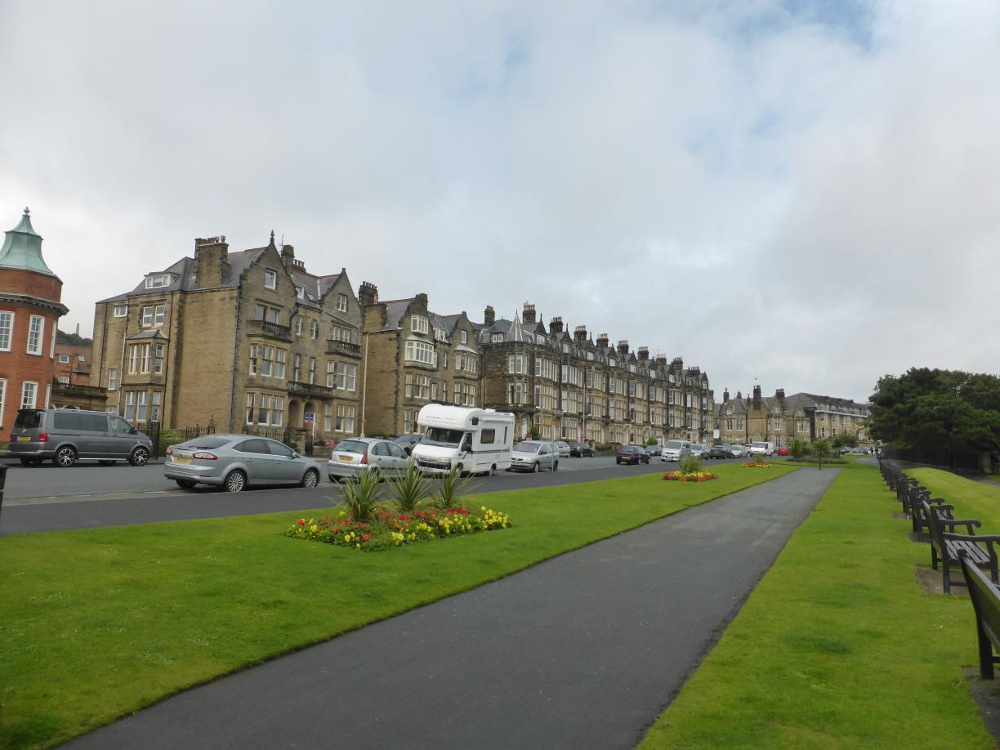
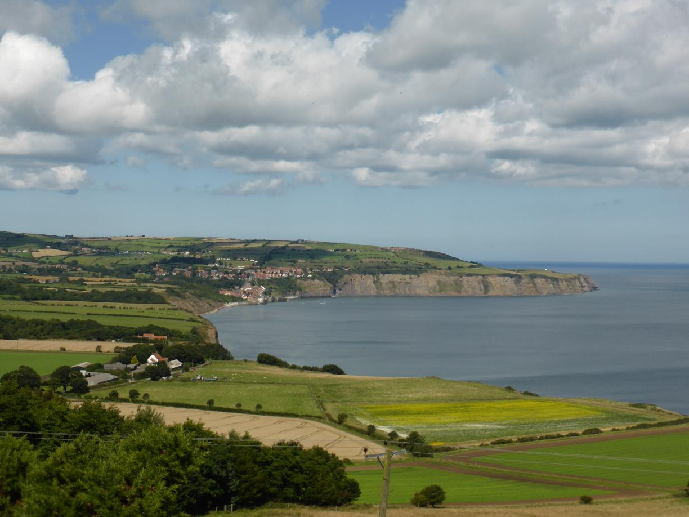
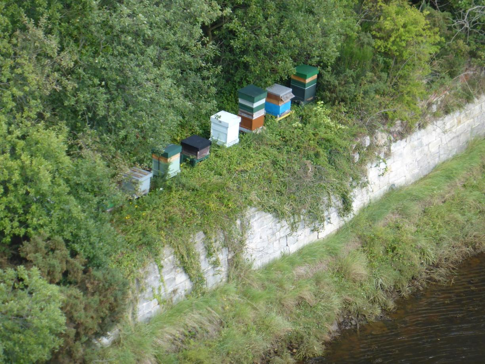
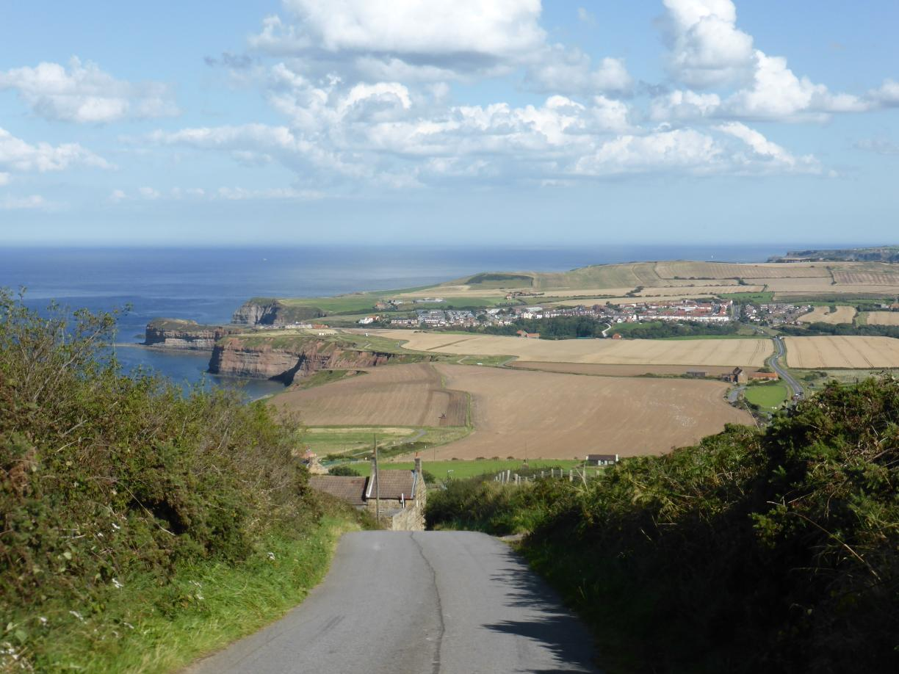
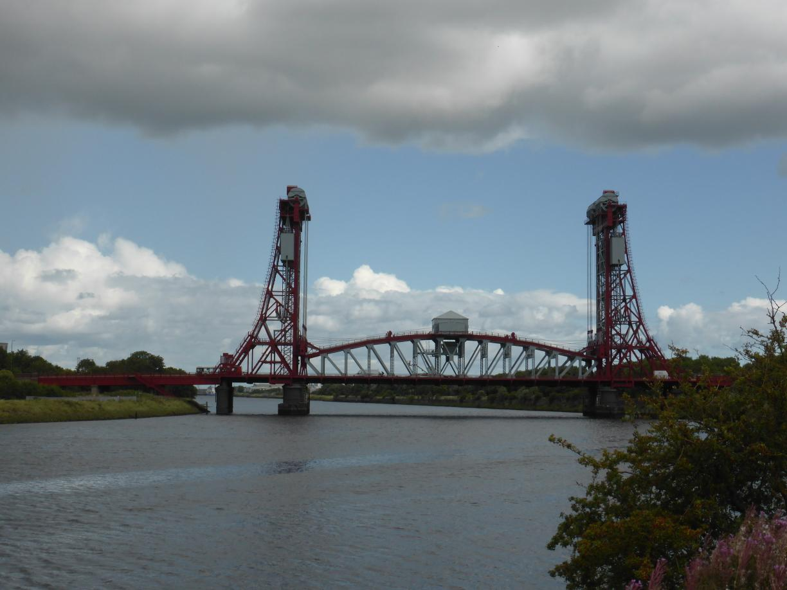
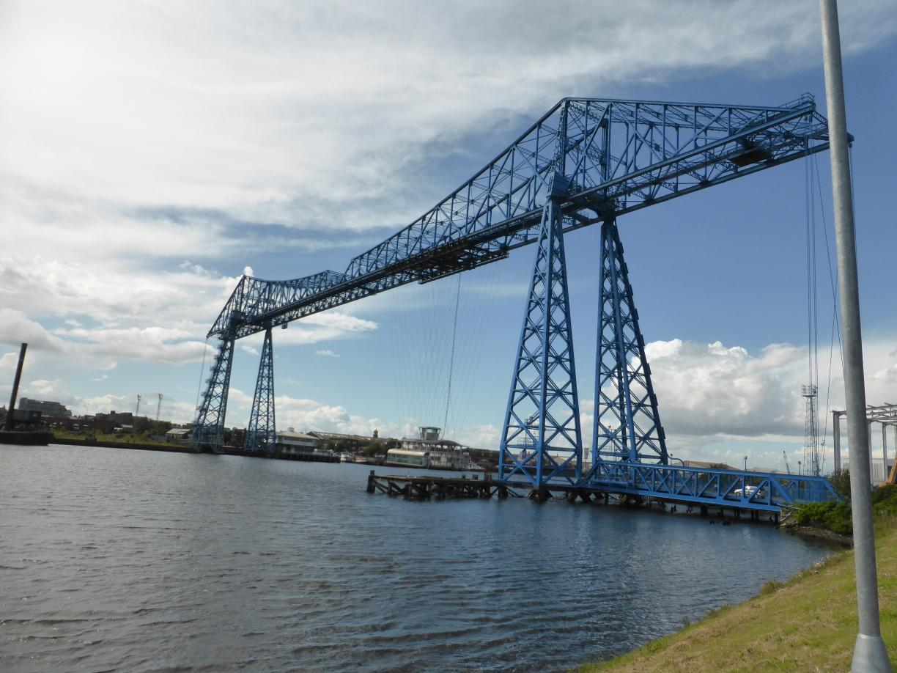

Brücken und Steilküsten Posted on August 18, 2017
Tag 18
Cayton - Redcar 88 km
In der Nacht hatte es den ersten wirklichen Regen gegeben. Und auch der Blick von der Klippe auf Scarborough war noch recht wolkenverhangen. Aber immerhin war es trocken und die Aussicht war trotzdem super.   Von Scarborough aus fuhr ich entlang der National Cycle Route 1, die entlang einer alten Bahntrasse immer entlang der Küste bis Whitby führte. Die Trasse war nicht asphaltiert und aufgrund des Regens in der Nacht stellenweise ein wenig matschig. Aber die Ausblicke, die sich unterwegs boten machten das ganze mehr als ertragbar.   Whitby selber war so stark überlaufen, dass ich auch mit dem Fahrrad kaum durch kam. Also fuhr ich auf dem schnellsten Wege wieder aus der Stadt. Der weitere Weg bis Redcar bot ein paar sehr brutale Anstiege, Einmal ging es schnurgerade eine Steilküste hoch mit gut 25% Steigung.  Am Ende kamen so über 1000 Höhenmeter zusammen und ich war ziemlich fertig als ich endlich in Redcar ankam.
Tag 19
Redcar - Trimdon 58 km
Die Strapazen vom Vortag noch nicht gänzlich überwunden, kämpfte ich auf dem Weg nach Middlesbrough erstmal mit heftigem Gegenwind.
Anschließend fuhr ich noch ein wenig in die falsche Richtung. Dafür entdeckte ich diese schicke Vertikalhebebrücke (oder wie auch immer der Fachterminus lautet).  Wieder in Middlesbrough zurück überquerte ich mit der Tees Transporter Bridge den River Tees. Dabei wird man auf einer, an der Brückenkonstruktion aufgehängten, Plattform über den Fluss getragen. Während der Überfahrt unterhielt ich mich nett mit dem Fahrer. Leider waren wir nach gut 90 Sekunden auch schon auf der anderen Seite.  Anschließend kämpfte ich weiter entlang von stark befahrenen Straßen gegen den Wind. Später kam ich dann wieder an die Küste und konnte in der Ferne Redcar erkennen. So weit war ich also garnicht gekommen.
Vom Vortag immer noch erschöpft, war ich sehr froh, als ich ein paar Stunden später an einen netten Bauernhof kam, wo ich mein Zelt aufstellen konnte.